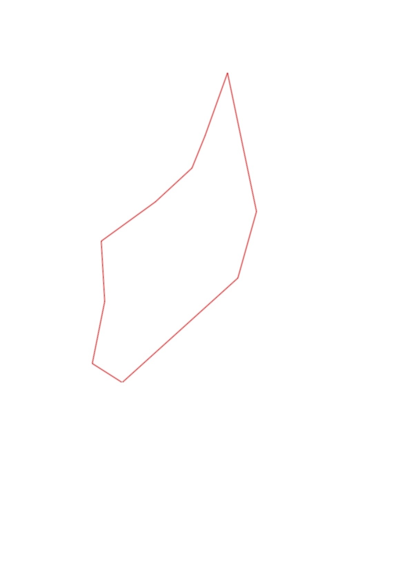
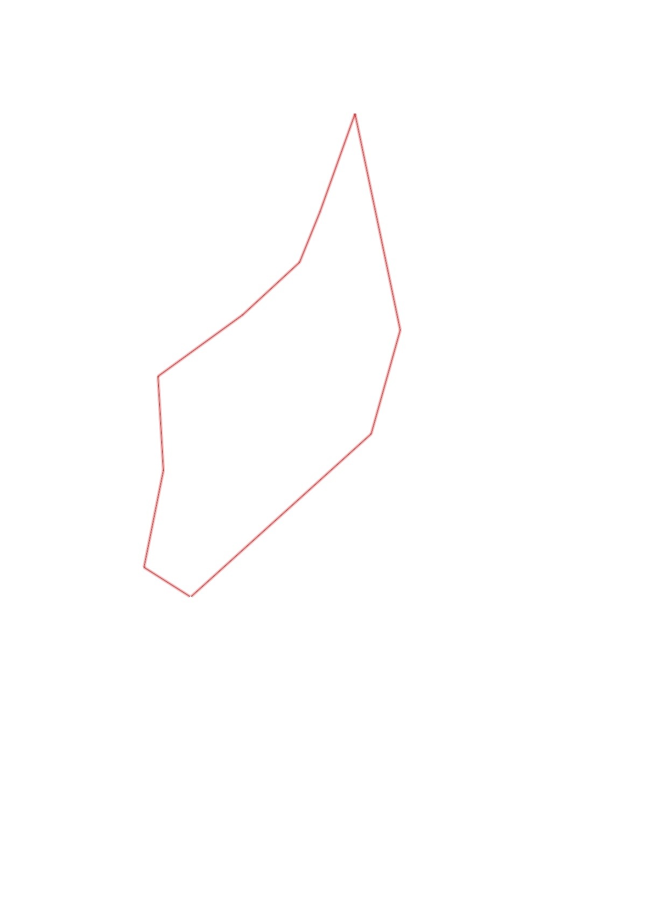

| Control |
Points |
Time Punched |
Distance |
Your Time |
Pace |
Place |
Fastest Time |
Median Time |
% Behind Fastest |
| 35 |
30 |
|
0.27 |
0:03:00 |
11:06 |
16 / 17 |
0:01:07 |
0:01:37 |
168% |
| 58 |
50 |
|
0.48 |
0:17:00 |
35:25 |
1 / 1 |
0:17:00 |
0:17:00 |
0% |
| 53 |
50 |
|
0.46 |
0:05:00 |
10:52 |
1 / 2 |
0:05:00 |
0:07:19 |
0% |
| 65 |
60 |
|
0.51 |
0:03:42 |
07:15 |
3 / 5 |
0:02:49 |
0:03:42 |
31% |
| 39 |
30 |
|
0.38 |
0:04:44 |
12:27 |
7 / 7 |
0:02:28 |
0:02:44 |
91% |
| 77 |
70 |
|
0.27 |
0:02:07 |
07:50 |
8 / 9 |
0:01:14 |
0:01:56 |
71% |
| 100 |
100 |
|
0.51 |
0:04:07 |
08:04 |
5 / 6 |
0:02:50 |
0:03:40 |
45% |
| 61 |
60 |
|
1.08 |
0:07:50 |
07:15 |
1 / 1 |
0:07:50 |
0:07:50 |
0% |
| 59 |
50 |
|
0.53 |
0:04:41 |
08:50 |
5 / 7 |
0:03:28 |
0:04:06 |
35% |
| Finish |
0 |
|
1.18 |
0:09:33 |
08:05 |
1 / 1 |
0:09:33 |
0:09:33 |
0% |
Total Distance Covered: 5.67km
Points Scored: 500
Late Penalty: -40
Final Score: 460
Total Time: 1hours 1minutes 44seconds
Efficiency: 81.13 points/km
 
